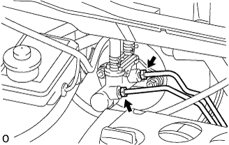

Brake Master Cylinder ASSY removal |
| 1. Brake fluid removal |
| 2. Brake Master Cylinder SUB-ASSY |
|  |
Use Union Nut Wresten 10 to separate the two brake tubes from the brake master cylinder Assy.
Shift the two clips and separate the brake master cylinder reservoir No.1 and brake master cylinder reserved batum No.2 from the brake master cylinder union.
 |
Remove the two nuts and remove the brake master cylinder ASSY.